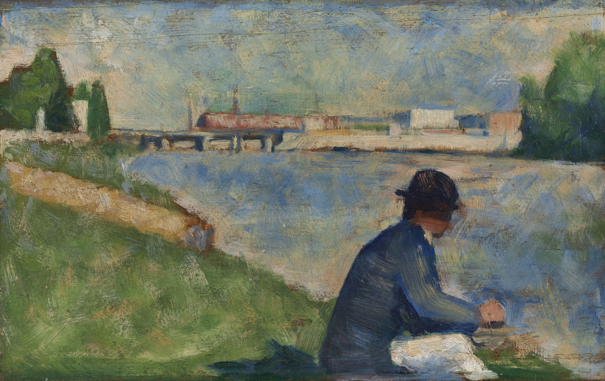

Once you can capture a moment of light, what else is a painting for?
Impressionism caught the fleeting moment, but some artists wanted more. They admired its bright color and freedom, yet felt it gave up too much: solid structure, deep feeling, lasting order. The next generation kept the Impressionist palette and pushed past the passing instant in very different directions. We call them the Post-Impressionists.
🎯 BY THE END OF THIS LESSON YOU WILL BE ABLE TO…
1
I will be able to explain how Post-Impressionism built beyond Impressionism.
2
I will be able to describe Seurat’s pointillism and Cézanne’s search for structure.
3
I will be able to connect Post-Impressionism to the modern art that follows it.
📋 WHAT YOU NEED FOR THIS LESSON
▶
A notebook or an open Word document for your Color & Light Study notes
▶
Lesson 10.01 fresh in mind: plein air, broken brushwork, optical color
📚 PART 1 · LOOK FIRST~12 MIN
👀 LOOK CLOSELY · TWO DIFFERENT ANSWERS
Look at Seurat’s study on the left: the color is laid down in countless tiny separate touches, almost mechanical, the figures calm and still. Now look at Cézanne’s river on the right: trees, water, and bank are built from flat blocky planes of color that lock together like masonry. Both start from Impressionism, yet neither is chasing a fleeting moment. What is each one after instead?

Study for Bathers at Asnières, Georges Seurat, about 1883 to 1884. Public domain.
Banks of the Marne, Paul Cézanne, 1888. Public domain.
Post-Impressionism is not a single style. It is the name historians give to several French artists of roughly the 1880s and 1890s who started from Impressionism and then pushed beyond it. They kept its bright, unmixed color and its freedom from old rules, but each wanted something Impressionism had set aside: lasting order, solid form, or deep personal feeling.
Think of it as the second generation. Impressionism opened the door by trusting color and the artist’s own eye. Post-Impressionism walked through and asked what else painting could do once the moment had been mastered.
📚 PART 2 · THREE PATHS BEYOND THE MOMENT~16 MIN
Georges Seurat turned Impressionist instinct into a method. In pointillism (also called divisionism), he covered the canvas with thousands of tiny dots of pure color placed side by side. He did not blend them on the canvas; he relied on optical mixing, letting the viewer’s eye fuse adjacent dots into new colors at a distance. The result is bright, but also still, ordered, and almost scientific, the opposite of a quick sketch.
HOW OPTICAL MIXING WORKS
Up close: the canvas is thousands of separate dots of pure, unmixed color. From across the room: your eye fuses neighboring dots into a single glowing tone. Seurat never blends the paint on the canvas; the blending happens in your eye, which keeps the color vivid. Step back from Seurat’s painting above and watch the dots pull together.
Paul Cézanne went the other way. He wanted to give Impressionism back its lost solidity, to make “something durable, like the art of the museums.” He searched for the underlying structure of nature, simplifying trees, water, and hills into firm geometric planes of color that fit together like building blocks. His pictures feel weighty and constructed. By breaking the world into planes, Cézanne pointed straight toward Cubism, which is why he is often called the bridge to twentieth-century art.
A third path was pure feeling. Vincent van Gogh used intense, sometimes unrealistic color and thick, swirling brushwork to carry raw expression, his own emotion, into the painting. A night sky could blaze and churn far beyond what the eye reports, because the truth he was after was inner, not optical.
👀 FLIP TO CHECK · CLICK EACH CARD
Cover the text above. Can you recall what each Post-Impressionist was reaching for? Click a card to flip it.
Seurat
Pointillism: tiny dots of pure color that the eye blends (optical mixing); ordered and calm.
Cézanne
Structure: the solid geometric form under nature; the bridge toward Cubism.
Van Gogh
Expression: intense color and swirling strokes to carry inner emotion.
All three shared
Started from Impressionism, kept its bright color, then pushed past the fleeting moment.
📚 PART 3 · LOOK LONG AT ONE WORK~15 MIN
🔍 ARTWORK SPOTLIGHT
Study for Bathers at Asnières (about 1883 to 1884)
Georges Seurat · Post-Impressionism (pointillism)
Describe: Figures rest on a riverbank in sunlight, with water and a far shore behind. The whole surface is built from small, separate touches of color rather than smooth areas. The mood is quiet and the figures are still.
Analyze: Seurat keeps Impressionist bright color but controls it. Tiny dabs of pure color sit side by side and blend in the viewer’s eye (optical mixing), while the figures are arranged in calm, stable shapes. The method is systematic, not spontaneous.
Interpret: One reading is that Seurat wanted the light of Impressionism with the order and permanence it lacked. He turns a sunny instant into something composed and timeless, closer to a classical relief than a quick sketch.
Judge: Judged by that goal, giving Impressionist color a lasting structure, it succeeds. The dotted surface shimmers, yet the picture feels deliberately built and calm rather than fleeting.
✅ CHECK YOUR UNDERSTANDING
In pointillism, the colors are blended…
Cézanne is called a “bridge to the twentieth century” because he…
⚠️ WORTH KNOWING · AI & ARTISTIC DECISIONS
Seurat’s dots, Cézanne’s planes, and van Gogh’s swirls are not random textures; each is a deliberate choice about what the artist wanted a painting to do. An AI can generate “a pointillist scene” or “a Cézanne-style landscape” on request, blending the visual habits of many works. It cannot make the underlying decision, the reason a particular artist chose order, or structure, or feeling, over the alternatives. That decision is what makes these three painters different from one another.
📖 VOCABULARY FROM THIS LESSON
Post-Impressionism
French art of roughly the 1880s and 1890s that started from Impressionism and pushed beyond the fleeting moment.
Pointillism / divisionism
Building an image from many tiny dots of pure, unmixed color (Seurat).
Optical mixing
Letting the viewer’s eye blend separate dots of color into new tones at a distance.
Structure / form
The solid, underlying geometry of a scene; Cézanne’s main pursuit.
Expression
Using color and brushwork to carry inner feeling rather than to record the eye’s view (van Gogh).
✏️ NOW YOU TRY · IN YOUR NOTEBOOK
Take the color-and-light notes you made in Lesson 10.01 and decide which Post-Impressionist path fits what you want to say. Will you chase the bright fleeting light (Impressionist), build it from small dots of pure color (Seurat), reduce the scene to firm blocky planes (Cézanne), or push the color past realism to carry a feeling (van Gogh)? Write one sentence naming your choice and why. This decision will shape your Color & Light Study.
➡️ WHAT YOU’LL DO NEXT
1
Impressionist Artwork Analysis (assignment)
Write a full four-step analysis of a Monet, Renoir, or Cassatt.
2
Academic Art vs. Impressionism (discussion)
Weigh the polished official salon style against the new loose outdoor painting.
3
Color & Light Study (creation) and Unit 10 Quiz
Make your own study of light and color, then take the short auto-graded quiz.
💪 WHY THIS MATTERS
In one generation, painting moved from copying what the eye reports to deciding what a painting should be: ordered, solid, or charged with feeling. Cézanne’s broken-down forms point straight at the twentieth century, when artists will shatter the picture entirely. Next: modern and contemporary art.
Optima Academy Online · ART HISTORY & CRITICISM · Semester 2 · Student Lesson Page
Lesson 10.02 · Post-Impressionism: Beyond the Moment